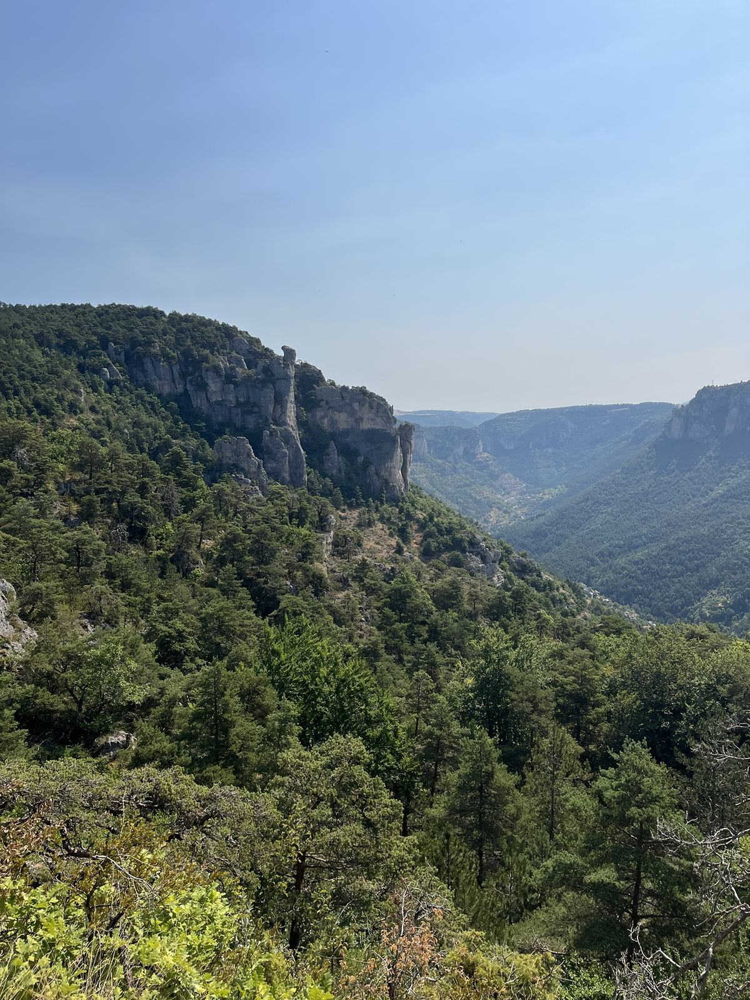
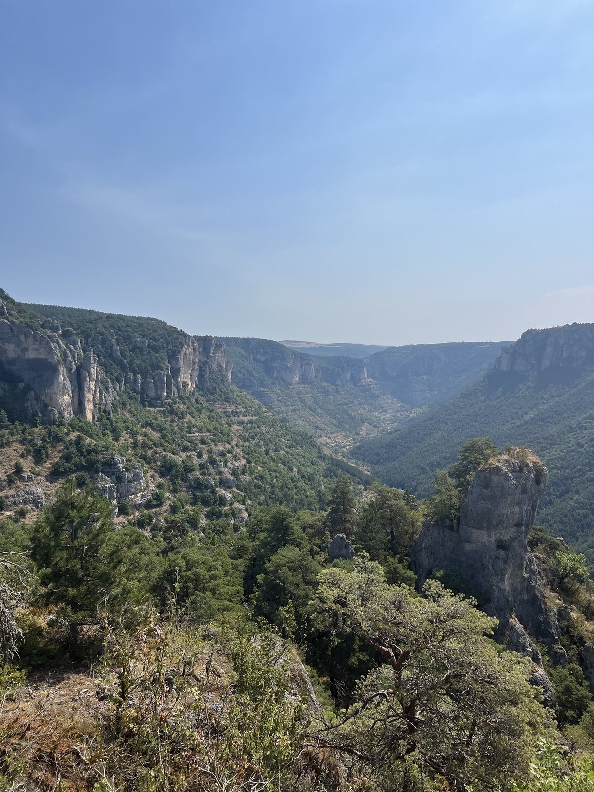
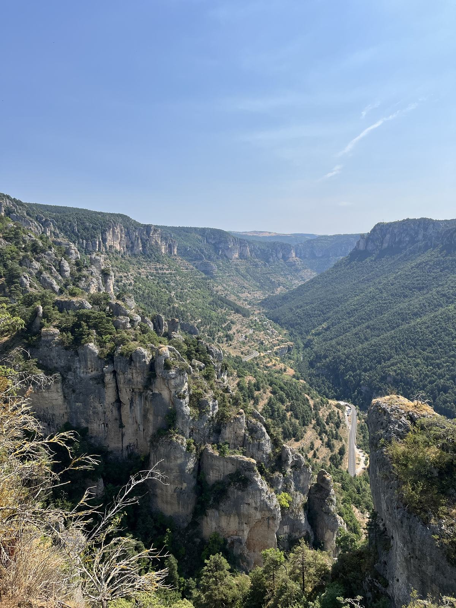
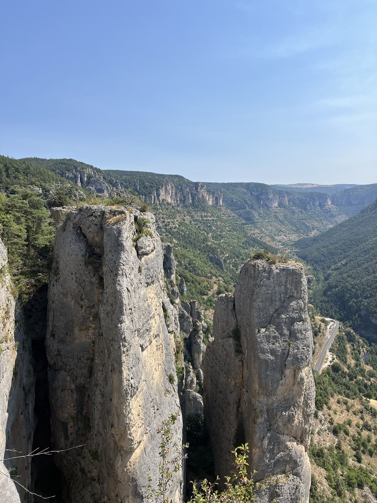
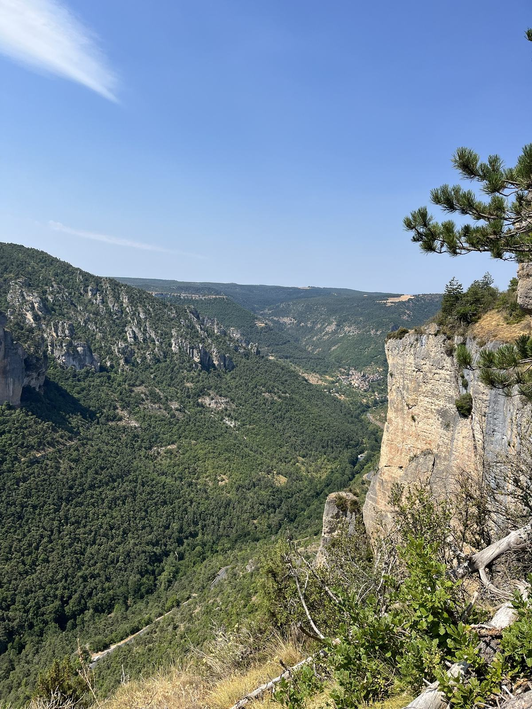
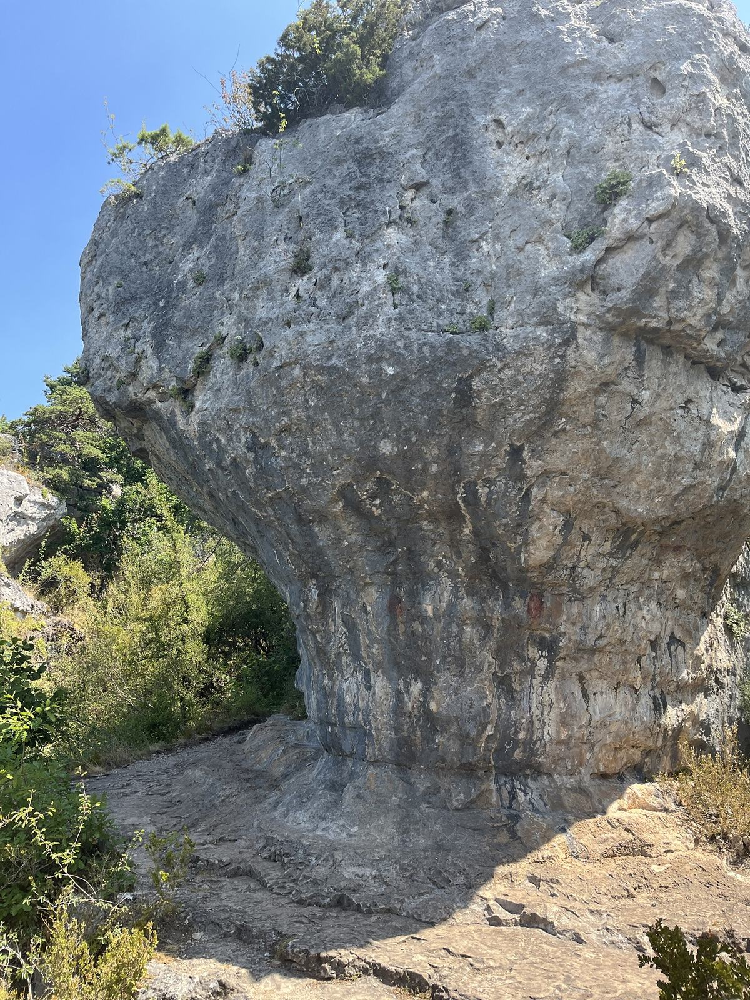
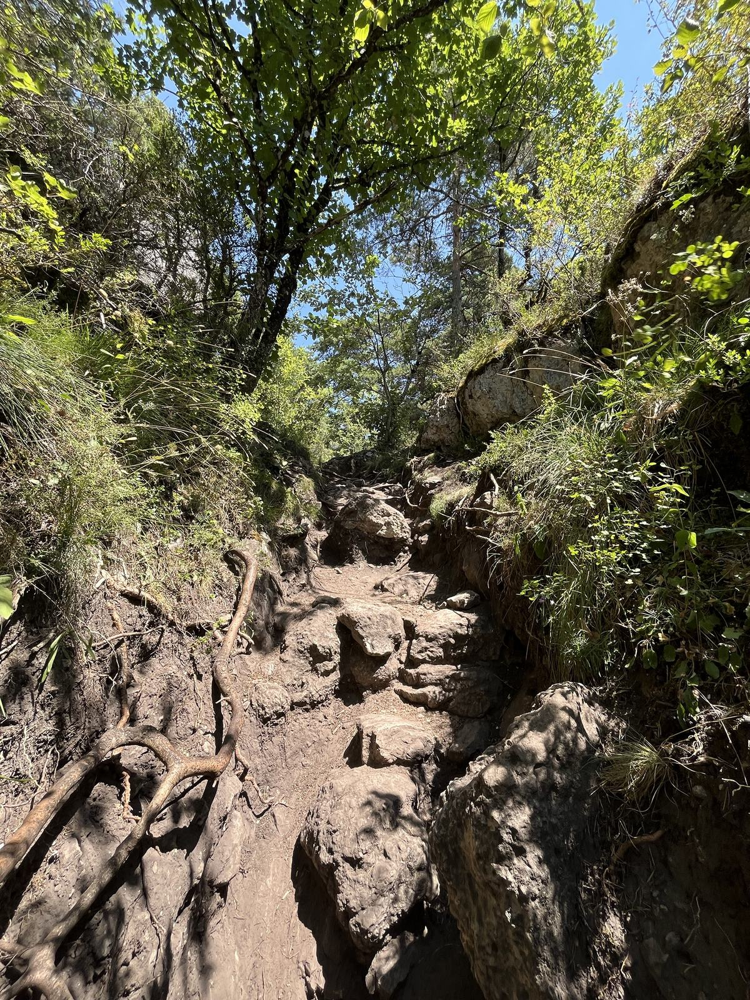
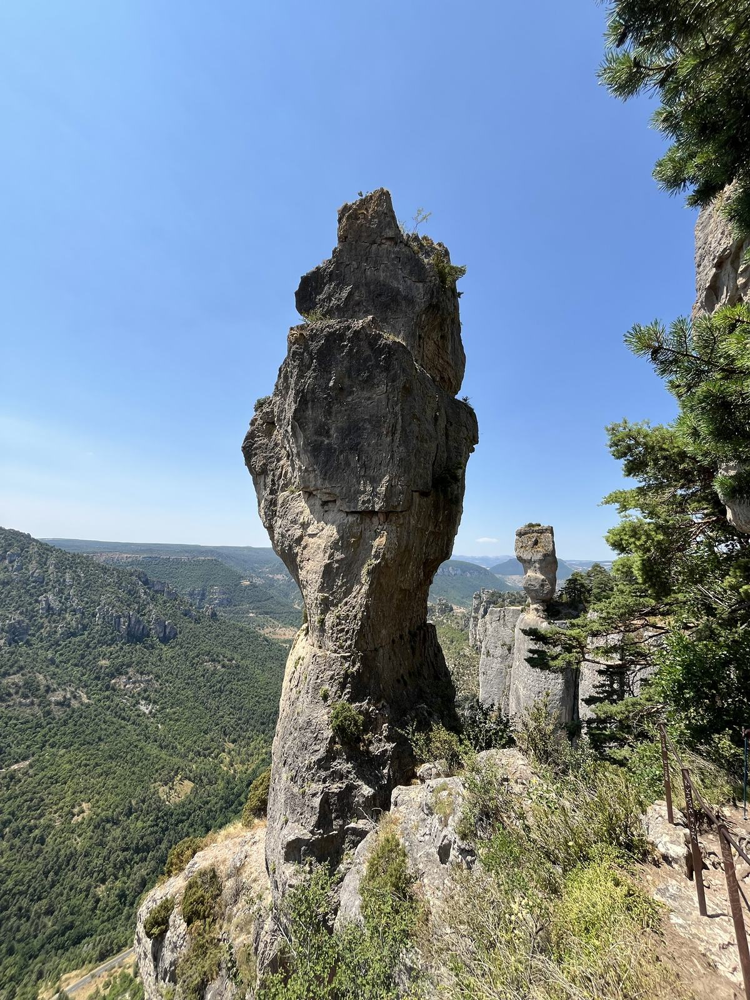
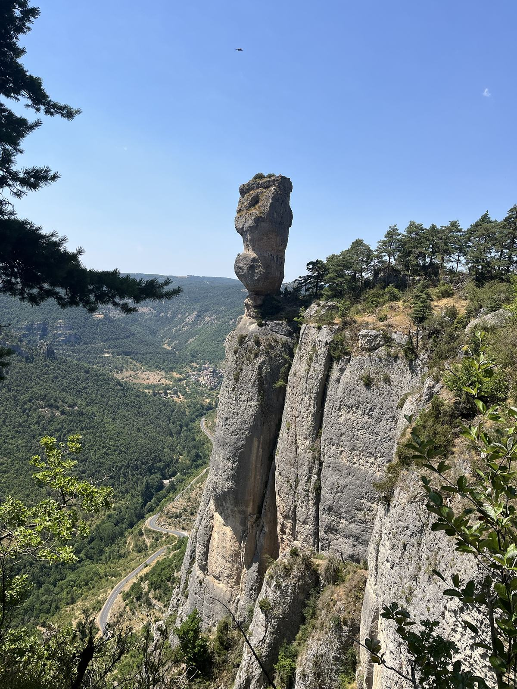
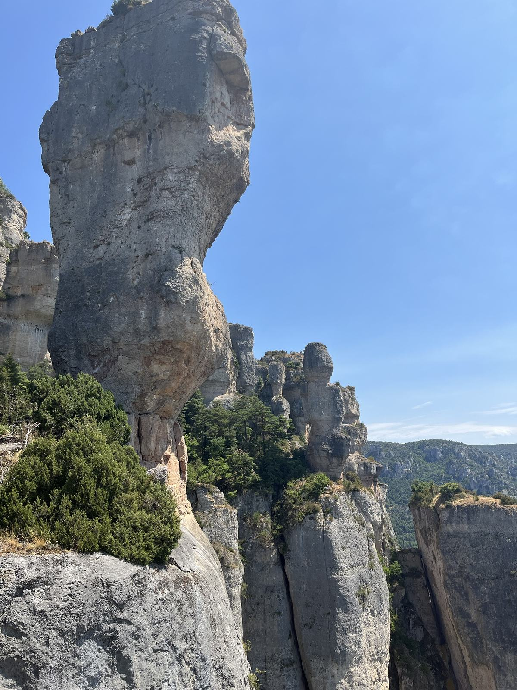

📋 Fiche technique
- 🥾 Pratique : randonnée
- 📏 Distance : 8,1 km • ⬆️ 290 m D+
- 🔁 Type : boucle
- ⏱️ environ 2h15 de marche (estimé d’après mon temps)
- 📍 Départ : Cassagnes (Saint-Pierre-des-Tripiers) [parking à préciser]
- 💪 Difficulté : facile
- 💧 Points d’eau : [à compléter]
🚶 Le parcours
[Débrief d’Adrien à venir : déroulé de l’itinéraire, points forts, ambiance.]
📸 En images










⚠️ Points d’attention
- En période de risque d’incendie, l’accès peut être restreint : renseignez-vous avant de partir (c’est ce qui nous a obligés à partir de plus loin).
- Certains passages longent le bord des falaises des corniches : prudence avec les enfants et si vous êtes sujet au vertige.
- [Points d’attention à compléter]
💡 Mes conseils
- [Conseils à compléter]
📹 La vidéo
[Lien de la vidéo à ajouter]
🧰 Pour préparer votre sortie (points d’eau, ravitaillement…), jetez un œil à ma page Outils.